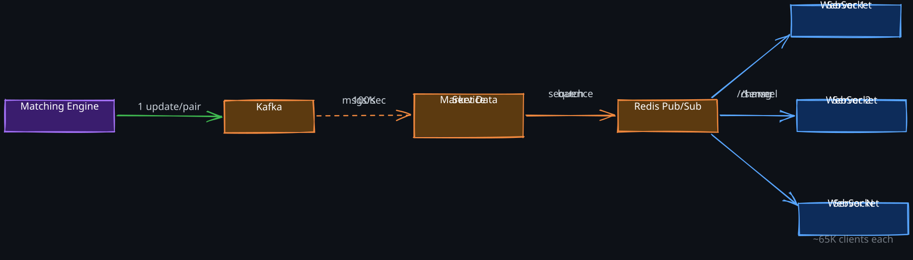

The Story
Twitter’s celebrity problem is well-known — when Lady Gaga tweets to 80M followers, write-time fan-out means inserting 80M timeline entries. The deeper, less-discussed consequence is architectural: Twitter’s hybrid solution (push for normal users, pull for celebrities) means your timeline is assembled from two completely different code paths that are merged at read time. Bugs in one path but not the other created ghost tweets and missing tweets for years, and debugging was nightmarish because the behavior depended on who tweeted, not what they tweeted. One design decision fractured the entire read path.
Every system that delivers content from one producer to many consumers faces the same fundamental tension: should the producer do the work of distributing content at write time, or should each consumer do the work of assembling content at read time? This is the fan-out problem, and the choice between these approaches — and the hybrid strategies that combine them — is one of the most consequential architectural decisions in system design.
The fan-out problem appears in social media timelines, group messaging, real-time market data, notification delivery, and any system where a single event must reach many recipients. Understanding the tradeoffs deeply is essential because the naive choice in either direction fails catastrophically at scale.
Related Topics: 01-Caching-Techniques, 01-Kafka, 01-01-Redis, 01-Choreography-Orchestration
1. The Core Problem
Consider a social media platform where users follow other users and expect a personalized feed. When a user publishes a post, every follower should eventually see it. The question is when and where the work of connecting posts to followers happens.
There are only two fundamental options:
- Do the work at write time — when the post is created, immediately copy it (or a reference to it) into every follower’s feed. Reads become trivial: just fetch the pre-built feed.
- Do the work at read time — store the post once. When a follower opens their feed, query all followed accounts, fetch their recent posts, merge, rank, and return.
Neither approach works universally. The choice depends on the write-to-read ratio, the fan-out degree (how many recipients per event), and the latency requirements for each side.
2. Fan-Out on Write (Push Model)
1. How It Works
When a user publishes content, a background worker immediately writes a reference to that content into every follower’s pre-computed feed. The feed is typically stored as a sorted set in 01-01-Redis, keyed by recipient and scored by timestamp.
The sequence:
- User publishes content. The service writes metadata to the primary store (Cassandra, MySQL) and publishes a fan-out job to 01-Kafka.
- Fan-out workers consume the job, fetch the publisher’s follower list, and write
content_idinto each follower’s feed in Redis viaZADD. - When a follower opens their feed, the system reads directly from Redis — a single
ZREVRANGEBYSCOREcall returning pre-sorted results.
2. Why It Works Well for Regular Users
For a user with 500 followers, the fan-out job writes 500 Redis entries. At microseconds per write, this completes in under a millisecond. The critical advantage is that read latency is constant and minimal regardless of how many accounts a reader follows. The work is amortized across writes, which are less frequent than reads in most social systems (read-to-write ratios of 100:1 or higher are typical).
3. Where It Breaks: The Celebrity Problem
A user with 100 million followers creates a fan-out of 100 million writes per post. At 10 posts per day, that is 1 billion writes per day from a single user. This creates three cascading problems:
- Write amplification. The total write volume across the system is proportional to
sum(followers_per_user * posts_per_user). A small number of high-follower accounts can dominate total write volume, consuming disproportionate resources. - Latency spike for the publisher. Even with async fan-out, the time between publishing and the last follower receiving the update can stretch to minutes. For time-sensitive content (breaking news, live events), this delay is unacceptable.
Wasted work. Many followers are inactive. Writing to 100 million feeds when only 10 million users will open the app today wastes 90% of the writes. The system pays the cost upfront with no guarantee the work will ever be consumed.
3. Fan-Out on Read (Pull Model)
1. How It Works
Content is stored once, in the publisher’s timeline or a global content store. When a reader opens their feed, the system:
- Fetches the reader’s follow list (the accounts they follow).
- Queries each followed account’s recent posts.
- Merges, deduplicates, and ranks the results.
- Returns the assembled feed.
2. Why It Works Well for High-Follower Accounts
For a celebrity with 100 million followers, publishing is a single write. The cost is shifted to read time, but only the followers who actually open the app pay that cost. No wasted work.
3. Where It Breaks: The Active Reader Problem
A user following 500 accounts requires 500 parallel queries to assemble their feed. At 175,000 timeline reads per second (Twitter-scale), this is 87.5 million database queries per second — a load that overwhelms any database cluster. The fan-out on read model trades write amplification for read amplification, and at scale, the read side buckles.
The latency profile is also worse. Each feed request requires multiple round trips (follow list lookup, N content queries, merge, rank), making it difficult to serve feeds under 200ms consistently. Tail latency is especially problematic because the slowest of the N parallel queries determines the response time.
4. Hybrid Fan-Out: The Production Solution
The key insight is that most users have few followers, and most followers follow few celebrities. A hybrid strategy uses fan-out on write for regular users and fan-out on read for high-follower accounts, combining the strengths of both approaches.
1. How It Works
Define a follower threshold (Twitter uses ~10,000; Instagram uses ~50,000). Users above this threshold are treated as “celebrities” whose content is not fanned out at write time.
Write path (regular users only):
- User publishes content.
- Fan-out worker checks follower count. If below threshold, writes to each follower’s feed in Redis.
- If above threshold, skips fan-out entirely. Content is stored only in the publisher’s timeline.
Read path (merge on demand):
- Reader requests their feed.
- System fetches the pre-computed feed from Redis (contains all regular-user content).
- System identifies which celebrities the reader follows.
- Fetches recent content from each celebrity’s timeline (typically 5-20 celebrity queries per reader).
- Merges celebrity content into the pre-computed feed, ranks, and returns.
2. Why the Merge Is Cheap
The pre-computed feed from Redis contains the bulk of the content (sorted, ready to serve). Celebrity content is a small addition — most users follow fewer than 20 celebrities. Merging 20 sorted lists into an already-sorted feed is O(k log k) where k is small. The most popular celebrities can have their recent content pre-cached in a dedicated Redis key, reducing the merge to a memory-only operation.
3. Threshold Selection
The threshold is not arbitrary. It is the point where the cost of fan-out on write exceeds the cost of fan-out on read:
Cost of fan-out on write per post = followers * cost_per_redis_write
Cost of fan-out on read per read = celebrity_read_cost * reads_per_post
When followers * write_cost > reads_per_post * read_cost, the user should be treated as a celebrity. In practice, this crossover point is typically between 5,000 and 50,000 followers, depending on the read-to-write ratio and infrastructure costs.
The threshold can also be adaptive: under high system load, temporarily lower the threshold to reduce write amplification, effectively shifting more work to the read path. This provides a natural backpressure mechanism.
5. Fan-Out in Real-Time Systems
1. Group Messaging (WhatsApp Pattern)
Group messaging is a fan-out problem with different constraints than social feeds. Messages must be delivered in order, with delivery guarantees, and the fan-out degree is bounded (group sizes are typically capped at 256-1024 members).
Why synchronous fan-out fails for groups. Delivering a message to 256 members requires 256 connection registry lookups and 256 pub/sub publishes in the request path. At 1,000 simultaneous group sends, this creates 256,000 operations blocking senders’ requests. Latency becomes unacceptable.
Async fan-out via Kafka. The sender’s WebSocket server persists the message to storage and publishes a single event to a Kafka topic partitioned by group_id. The sender receives a “sent” acknowledgment immediately. Fan-out workers consume from Kafka, check each member’s connection status, and route messages through pub/sub to the appropriate WebSocket servers. Offline members are queued for push notification delivery.
Partitioning by group_id ensures all messages for a group land on the same Kafka partition and are processed by a single consumer, preserving message ordering within the group without distributed coordination.
Size-based hybrid. For small groups (under 10 members), the WebSocket server can perform synchronous fan-out directly — the latency penalty is negligible and the simplicity wins. For larger groups, the async Kafka path handles the load.
2. Market Data Fan-Out (Exchange Pattern)
A cryptocurrency exchange produces 100,000+ order book updates per second that must reach millions of connected clients. Direct unicast (one message per client per update) would require 200 million pushes per second — impossible for any single system.
Tiered fan-out architecture solves this by amplifying distribution at each layer:

Each tier multiplies the fan-out efficiently:
- Kafka handles 1M+ messages per second per topic.
- Market Data Service batches updates into 50-100ms windows, reducing message volume 10-20x.
- Redis Pub/Sub delivers one message per channel per subscribed WebSocket server (not per client).
- WebSocket servers perform the final local fan-out to their connected clients — O(local_subscribers), not O(total_subscribers).
Sequence numbering is critical for correctness. Every delta carries a monotonic sequence number per trading pair. If a client detects a gap (received sequence > expected sequence), it requests a full snapshot to resynchronize. This prevents out-of-order application of incremental updates, which would corrupt the client’s order book state.
Bandwidth optimization. An incremental delta is ~200 bytes per price level change. A full snapshot is ~200 KB for 1,000 levels. Batching reduces per-client bandwidth to ~40 KB/sec for 3 trading pairs — feasible even on mobile connections.
6. Selective Fan-Out Optimizations
Production fan-out systems rarely push to every follower unconditionally. Several optimizations reduce wasted work:
- Active-user filtering. Only fan out to users who have been active in the last N days (typically 7). Inactive users receive their feed via fan-out on read when they return. This eliminates 60-80% of writes for many platforms, since most registered accounts are dormant.
- Batch writes. Group 100+ follower writes into a single Redis pipeline or Cassandra batch. This amortizes network round-trip overhead and improves throughput by 10-50x compared to individual writes.
- Priority queues. Partition fan-out jobs by recency — recent content gets high-priority processing. Older content (backfill, catch-up) processes on a lower-priority queue to avoid competing with real-time delivery.
- Online-user WebSocket push. For users currently connected via WebSocket, bypass the feed entirely and push the content directly. This provides sub-second delivery for active users while the feed write happens asynchronously in the background for when they next open the app.
- Backpressure-driven threshold adjustment. When the fan-out queue depth grows beyond a threshold, temporarily lower the celebrity follower threshold, shifting more users to the pull model. This provides graceful degradation under load instead of unbounded queue growth.
7. Fan-Out Strategy Decision Framework
| Factor | Fan-Out on Write | Fan-Out on Read | Hybrid |
|---|---|---|---|
| Read latency | Constant, minimal | Variable, grows with follow count | Minimal for most users |
| Write cost | Proportional to follower count | Minimal (single write) | Bounded by threshold |
| Storage | High (duplicated references) | Low (single copy) | Moderate |
| Freshness | Eventual (async fan-out delay) | Always fresh (query at read time) | Mix of both |
| Wasted work | High for inactive followers | None | Low (active-user filtering) |
| Best for | Regular users, read-heavy systems | High-follower accounts, write-heavy | Production social platforms |
| Worst for | Celebrities (write amplification) | Active readers (read amplification) | Simple systems (over-engineering) |
8. Failure Scenarios
1. Fan-Out Worker Failure
Fan-out workers crash after processing some but not all followers. Without careful design, some followers receive the content and others do not.
Mitigation: Kafka consumer offsets are committed only after the entire fan-out batch succeeds. On worker restart, the batch is reprocessed from the last committed offset. Fan-out writes must be idempotent — writing the same content_id to a follower’s sorted set with the same score is a no-op in Redis (ZADD is idempotent).
2. Redis Feed Cache Failure
If a user’s feed cache is lost (Redis node failure, eviction under memory pressure), the system must reconstruct it.
Mitigation: Fall back to full fan-out on read: query follow list, fetch recent posts from all followed accounts, merge, rank, cache the result, and return. This is slower (~200ms vs ~5ms) but happens only on cache miss. Once the feed is rebuilt, subsequent reads are fast again.
3. Kafka Partition Lag
If fan-out consumers fall behind, the delay between publishing and delivery grows. Users see stale feeds.
Mitigation: Monitor consumer lag as a primary SLI. Scale consumer instances horizontally when lag exceeds threshold. For time-sensitive content, use a separate high-priority topic with dedicated consumers.
Revision Summary
- Fan-out on write pre-computes feeds at publish time; reads are trivially fast but write cost scales with follower count
- Fan-out on read computes feeds on demand; writes are cheap but read latency scales with the number of followed accounts
- The hybrid approach fans out on write for regular users (below a follower threshold) and merges celebrity content on read
- The follower threshold (typically 5K-50K) is the crossover point where write cost exceeds read cost
- Group messaging uses async fan-out via Kafka partitioned by group_id to preserve ordering
- Market data systems use tiered fan-out (Kafka -> batching service -> pub/sub -> WebSocket servers) to reach millions of clients
- Selective optimizations (active-user filtering, batch writes, priority queues, WebSocket push) dramatically reduce wasted work
- Fan-out writes must be idempotent to handle worker restarts safely
Deep Understanding Questions
-
A platform has 1,000 users with 50 million followers each who post 20 times per day. With fan-out on write, what is the total daily write volume to follower feeds? At what point does this overwhelm a Redis cluster, and what are the options beyond switching to hybrid? Ans:
-
In a hybrid fan-out system, a user with 9,000 followers is just below the 10,000 celebrity threshold. They go viral and gain 50,000 followers in an hour. What happens to the fan-out system during this transition? How would you design the threshold to handle rapid follower growth without a sudden spike in write amplification? Ans:
-
A fan-out worker crashes after writing to 40% of a user’s followers. Kafka redelivers the message. The worker reruns the entire fan-out, writing to all followers including the 40% who already received the content. Why is this safe with Redis sorted sets but would be dangerous with a counter-based system? Ans:
-
In the tiered market data fan-out architecture, the Market Data Service batches updates into 50ms windows. A trading pair receives 500 price level changes in a single 50ms window. How does the batching service compress these into a single delta? What happens if a client’s WebSocket connection is slower than the batching rate? Ans:
-
Two users simultaneously post content that should appear in each other’s feeds (mutual followers). With fan-out on write, both fan-out jobs run concurrently. Could this create a deadlock or ordering anomaly in either user’s feed? Under what conditions would the feeds show different orderings of the same content? Ans:
-
A system uses active-user filtering to skip fan-out for users inactive for 7+ days. A user returns after 30 days and opens their feed. The system must reconstruct their feed on the fly. If they follow 500 accounts, 20 of which are celebrities, what is the worst-case query pattern? How would you bound the latency of this cold-start read? Ans:
-
In WhatsApp’s group messaging, messages are partitioned by group_id in Kafka to preserve ordering. What happens if a user sends a message to two different groups simultaneously? Is cross-group ordering guaranteed? Should it be? Ans:
-
A fan-out system uses WebSocket push for online users and feed writes for offline users. A user’s WebSocket connection drops for 3 seconds during a network blip. During that window, 5 posts arrive. The user reconnects. How does the system ensure those 5 posts are not lost? What is the interaction between WebSocket delivery and feed-based delivery? Ans:
-
The fan-out threshold is set at 10,000 followers. A user has 9,999 followers and fans out on write. They gain one more follower. Should the system retroactively stop fanning out previous posts? What is the migration strategy when a user crosses the threshold in either direction? Ans:
-
In a multi-region deployment, fan-out workers in each region process posts from local users. A user in US-East follows a celebrity in EU-West. The celebrity’s post must appear in the US-East user’s feed. How does cross-region fan-out work? What is the latency impact, and how does it interact with the hybrid threshold? Ans: